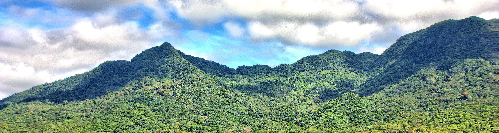

Trilhas
Serra de Maranguape
A Serra de Maranguape compõe parte do limite natural entre os municípios de maranguape e Caucaia e sua individualização é um problema para a literatura geomorfológica, existindo poucas referências sobre o processo pelo qual ocorreu o isolamento das serras da Aratanha e Maranguape.
A serra é um relevo residual pré-litorâneo, com cerca de 15 km de distânciada capital, apresentando morfologia bastante dissecada. A estabilidade é conseguida graças à cobertura arbórea, surgida pelos altos níveis de precipitação que ocorre nesses dois relevos.Existe um corte abrupto da elevação, contrapondo com a superfície do chamado piso, estabelecendo declividades superioresa 25º no setor ESSE da serra de Maranguape. A Serra de Maranguapetem é vista em seu conjunto como uma crista longitudinal, bem caracterizada nos modelos de elevação do terreno, alcançando altitude de pouco mais de 900m, onde temos o monumento natural da Pedra da rajada.
Breve histórico
As serras úmidas do Ceará possuem condições bastante favoráveis à exploração agrícola. Isto porque apresentam características de: solo bem mais fértil, maior oferta de água, menores temperaturas e preservação do solo por conta de densa cobertura vegetal. A história da ocupação do Ceará por portugueses e por holandeses passa por capítulos de busca por metais preciosos no territótio onde hoje se localiza o monte Itarema (Serra da Aratanha).
Mas as ações de ocupação da região só vieram se estabelecer a partir do século XVIII, com a concessão de sesmarias.
A Serra de Maranguape está dividida entre três municípios: Maranguape, Maracanaú e Caucaia. E a maior densidade de ocupação se deu no vale de sua vertente oriental.
De início houve forte expansão da produção cafeeira e de forma menos intensa, a paordução de laranjas. Esse movimento de produção de café no final do século XIX, temos a efetiva ocupação nas serras úmidas do NOrdeste. Isto porque, com condições mais favoráveis (emperatura amena e alta pluviometria) a eficiência da produção justificava os custos de manejo.
Foi um período de polarização entre a produção pecuária no sertão e produção de café nas serras. E isso fez com que o dínamo da imigração girasse intensamente pela primeira vez. Os embriões de novas cidades começaram a se fortalecer, principalmente no entorno do maciço. E as cidades já existente, como maranguape, ganharam impulso de desenvolvimento.
A produção de café foi tão proeminente que houve fluxo de exportação para Europa, a partir do Mucuripe. Fortaleza, Baturité e Maranguape ganhavam poderia político e econômico.
Podemos delimitar o ciclo do café em maranguape como sendo de 1862 à meados da década de 1920. Foi o período de significativos avanços urbanos. Desde a construção da Igreja Matriz ao surgimento do casario do centro histórico. Até mesmo a vaguarda da chegada de iluminação pública e luz elétrica.
Com a crise mundial de 1929, a produção de café brasileira é atingida em cheio e o declínio da produção afeta muito centros produtivos. Em maranguape não foi diferente. A produção cai substancialmente e a pequena elite se vê interessada em novos investimentos, sobretudo produção leiteira e algodão. Mas isso no ambiente do sertão. O poderio do café se torna o poderio do algodão. E maranguape passa a ser um dos principais centros prodtories da fibra, no Ceará.
Já na década de 1940, o interesse agrícola se volta novamente para a Serra de Maranguape, com especial atenção na produção de bananas. E junto a este movimento de produção, a beleza natural do lugar, oferta de água e proximidade de Fortaleza, tornou maranguape um centro turístico e de veraneio. Netse período começam a surgir exuberantes sítios e a relação com posseiros e moradores começa a mudar gradual e lentamente.
Antigos sítios são remodelados para lugares de veraneio e os mais ricos exibem o status de
A alta exploração do espaço da serra foi sentido em forma de uma grande tragédia ocorrida em 29 de abril de 1974. Na tarde daquele dia, uma grande porção da vertente oriental da serra desmoronou, gerando um efeito dominó de deslizamento e desabamentos das encostas
Foi período em que na Serra de Maranguape houve forte apelo ao extrativismo vegetal e os ciclos de produção de laranjas, café e banana. O ramal da linha de trem Fortaleza-Baturité, que vinha até Maranguape, ajudava no escoamento da produção e incentivava a gradual substituição da mata nativa pelos bananais.
A agricultura na Serra de Maranguape prosperou fortemente até meados da década de 1970, quando um gigantesco deslizamento de terra na serra,
Etapas do Projeto

- Principais trilhas da Serra de Maranguape mapeadas;
- Classificação destas trilhas por impacto físico;
- Disponibilização dos mapas das trilhas (versões em .kml e .kmz).ver
- Mapeamento da oferta de produtos e serviços pelos moradores da serra.
Eixos
- Tecnologias Ambientais
- Arquitetura Sustentável
- Eficiência Energética
- Energia Solar
- Armazenamento de sal
- Mineração Verde
- Hidrogênio Verde
- Tecnologias Sociais
- Água potável;
- Alimentação;
- Educação;
- Energia;
- Habitação;
- Renda;
- Saúde;
- Meio Ambiente;
Tecnologias Ambientais

Também chamada de tecnologia sustentável é resultado da aplicação de diversas ciências ambientais para o amparo do espaço natural e biodiversidade. Nos últimos em anos, a tecnologia ambiental ganhou uma nova força, no sentido corresponder necssidades de sdesenvolvimento sustentável.
Suas aplicações se entrelaçam com vários ramos das ciências ambientais, desde o controle de poluição até o desenvolvimento de processos limpos.
Tipos:
Mensuração ambiental:
Ferramentas, instrumentos, equipamentos ou mesmos sistemas de medida, controle e gestão de informações ambientais. Visa oferecer dados suficientes para as tomadas de decisão sobre a qualidade de Meio Ambiente.
Tecnologia de controle de poluição:
Processos, técnicas e práticas desenvolvidas para mitigar impactos gerados durante práticas produtivas. Não obrigatórias de imposição de mudanças no processo produtivo original. É o controle, não a mudança completa de paradigma.
Tecnologias limpas:
Eliminação ou diminuição dos aspectos prejudiciais dos processos produtivos sobre o Meio Ambiente. Requer uma perpsctiva holística.
Tecnologia de impacto nulo:
Isenta da geração de impacto durante o desenvolvimento, implantação e utilização. Temos como máximo representante deste segmento, algumas aplicações em Biotecnologia. Mas devemos tratar isso como caráter promissor. Termos um ciclo produtivo completo sem impactos ambientais é bastante improvável e utópico.
Exemplos:
- Arquiterura sustentável;
- Eficiência energética;
- Energia Solar;
- Armazenamento térmico com sal fundido;
- Mineração com tecnologias verdes;
- Hidrogênio verde.
Tecnologias Sociais

Todo produto, método, processo ou técnica com objetivo de produzir soluções para problemas sociais e que estejam em consonância com aspectos de simplicidade, aplicabilidade e reprodutibilidade, biaxos custos e legítimo impacto social, será tratado como tecnologia social.
Tecnologia social é algo instrinsecamente inclusivo. No sentido de que as pessoas afetadas pelo problema tem que participar da gestação e implementação das soluções. Essa apropriação dos processos dá sustentação às soluçõpes e amplia o empoderamento das counidades sobre os aspectos sócio-ambientais que lhes competem.
as tecnologias ambientais devem ainda promover cidadania, educação multidimensional, acessibilidade, inclusão, sustentabilidade, resgate e manutenção das culturas tradicionais, além do incentivo à participação popular. Sendo um conjunto de iniciativas que promovem transformações sociais de base, as pessoas tem que sere parte da solução dos seus próprios problemas.
Por se tratar, muitas vezes, de processos de inovação, as tecnologias sociais precisam de ações nos âmbitos coletivos com ênfase em fluxos participativos dos cidadãos. Todos os atores interessados no novo cenário devem se integrar e se engajar da melhor forma possível, observando-se as potencialidades de cada grupo. Tecnologias sociais e Inovações sociais podem ser tratadas como estados de ressonância.
Tecnologia Apropriada

Surgida em meados do século XIX durante a descolonização da Índia. Foi a intensificação da popularização da fiação manual.
Produzir o prórprio tecido seria uma das semestes para adifusão do pensamento popular para a independência econômica e política da Índia. mas a consequência deste movimento seria o surgimento da oposição à cultura e produção comercial do ocidente. E neste processo, ao ressignificar a fiação e fortalecer a tradição, Gandhi despertou a consciência política de milhares de hindus. Isso possibilitou o desenvolvimento do sentimento de independência política.
A roca de Gandhi se torna então o objeto da Tecnologia apropriada.
Ideia Conceito

ESPAÇO 1 - Escola Municipal de Ensino Fundamental, anos finais, de Educação Integral (mínimo 7 horas diárias), com currículo que trabalhe uma Base Nacional Curricular Comum - BNCC, uma parte diversificada para uma educação contextualizada e atividades extracurriculares, com oferta de curso e oficinas para a comunidade escolar.
ESPAÇO 2 - Núcleo de Pesquisa, Produção e Desenvolvimento, que possa contemplar como principais desafios: capacitação e domínio de toda a legislação ambiental que oriente e determine práticas e intervenções possíveis nos ecossistemas da região, conservação das fontes naturais, qualidade da água, geração de resíduos sólidos, nível de sustentabilidade das atividades econômicas da serra, desequilíbrios ambientais existentes com impacto no aumento de mosquitos, ecoturismo, produção de mudas...
Este Espaço abrange:
- Centro Municipal de Formação em Educação Ambiental;
- Célula do Núcleo Fitoterápico;
- Célula do centro de implementação do Projeto Gestão Inteligente de cidades
- Célula de pesquisa (preferência para o desenvolvimento de pesquisas voltadas para as Serras de Maranguape).
- Sede da APA da Serra de Maranguape.
- Serra da APA da Serra da Aratanha.

ESPAÇO 3 - Núcleo de Visitação, Resgate Histórico e Educação Ambiental, com o intuito de fortalecer o ecoturismo e a patrimonialidade existente em Maranguape. Nesse aspecto, pretende-se fortalecer o turismo local a partir da preservação da natureza, oferecendo um espaço para encontro das famílias, turismo ecológico, museu, auditório, centro de convivência etc.
ESPAÇO 4 - Coworking verde, pensado e vocacionado para odesenvolvimento de “negócios verdes" ou voltados para iniciativas que promovam a sustentabilidade. Nesse aspecto, precisa-se dotar o espaço de uma gestão direcionada para a avaliação de oportunidades e viabilidades de propostas e projetos.